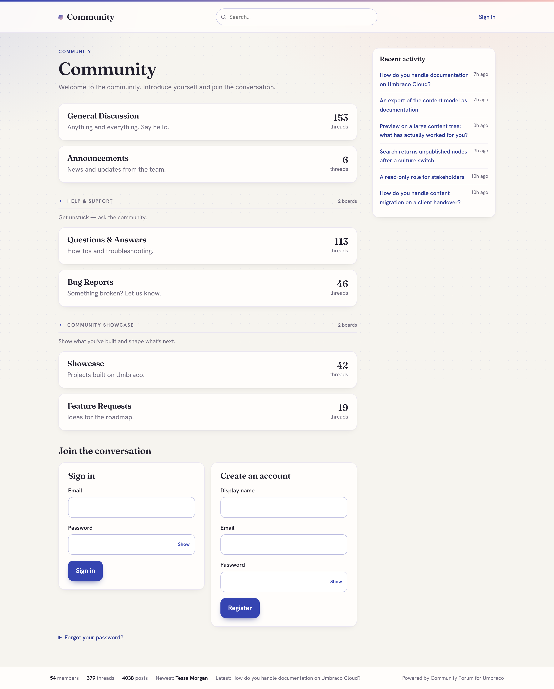

A discussion forum and page comments for Umbraco 17, sharing one moderation engine, one backoffice Community section and one moderation queue. Install the forum, page comments, or both.

# add either or both feature packages - Core installs automatically
dotnet add package DigitalWonderlab.CommunityForum
dotnet add package DigitalWonderlab.CommunityComments
# optional: AI-assisted moderation
dotnet add package DigitalWonderlab.CommunityAiThen open the Community section in the backoffice and run Setup.
Community:Auth:BaseUrl set to your public site URL, or
ASP.NET Core AllowedHosts set to a real allow-list. Password reset and email
verification will not send without one of the two.Free to use, under a proprietary licence: install and use in unlimited development, staging and production Umbraco websites at no charge. Redistribution and resale are not permitted. The full End User Licence Agreement ships inside each package. The source for these packages is not published; this site and its repository hold documentation, images and the issue tracker only.